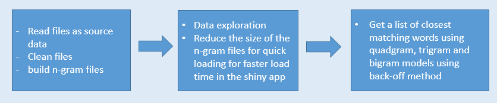
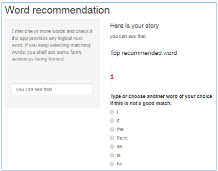

Data Science Capstone Project
The scope of this project is to develop an application to predict the next word using the typed words as input.
Data Source
"Coursera-Swiftkey.zip": The data used for this project. It consists of three files containing unstructured data from blogs, news articles and tweets provided in 4 languages.
As the data is huge(563MB English files) I have used only a small sample from each of the files and clubbed them together to generate the ngram models.
High level Workflow:

How to access and use the Shiny App
- The Shiny App link https://pradeepgurav.shinyapps.io/shinyapp/
- The app first loads the ngram files(bigram, trigram and quadgram) and prompts the user to type input words
- Enter one or more words, the app shows a list of recommendations as the 'next word'

Algorithm
- When a single word is fed as input, the app looks into bigram and suggests top n words with highest probability(frequency) from the bigram model. However when two, three or more words are fed as input, the app looks into trigram and quadgram models. However I combine suggestions from all models into one list. I put the words recommended by higher gram models on top followed by recommendations from lower gram models.
- The predictions can be made more accurate/realistic by:
- Using larger samples to generate ngrams
- Using higher degree n-grams as well
- Using domain specific input files to generate ngrams
- Saving user's most frequently used/preferred phrases in local cookies